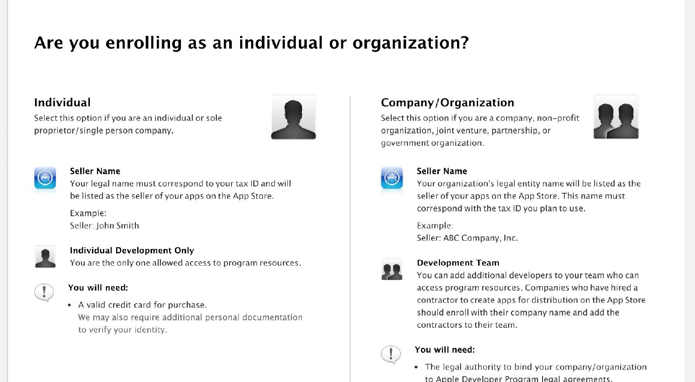
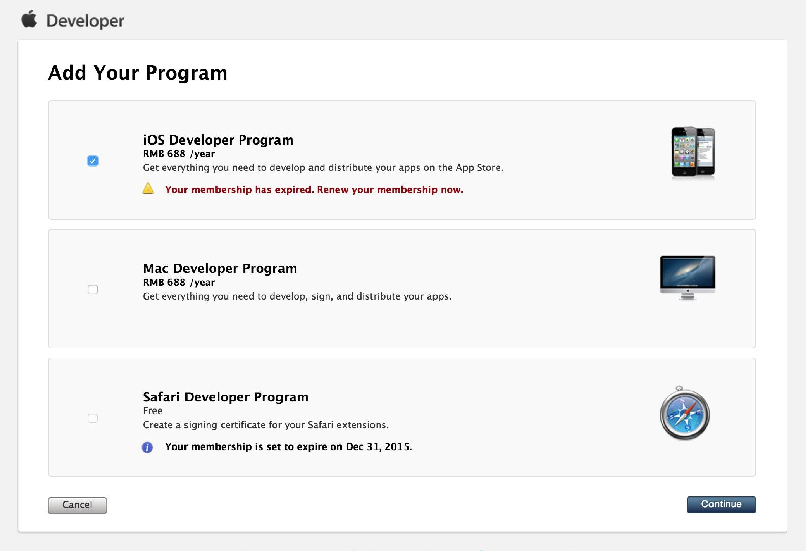
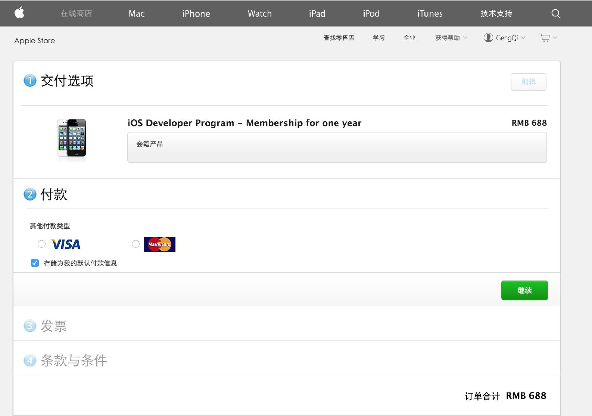

在开始 iOS 开发前，很重要的一件事是成为 iOS 开发者，这一步着实很难迈出，首先你需要一台 Mac，然后你需要一台 iOS 设备（最好是 iPhone），最后你还需要花费 99 美刀注册成为 iOS 开发者。
不过幸运的是 WWDC15 上苹果决定真机调试不再需要开发者账号，所以在你决定提交你的 App 之前，并不需要购买一个开发者帐号。
在硬件这个门槛上，Apple 最终会教会你几件事情 ——
能用钱解决的问题不要浪费时间；
对自己投资是一件最超值的事情；
免费的才是最贵的。
可能你最先想到的是，我虚拟机（可能是盗版虚拟机）弄个 Mac 系统（黑 Mac）吧，另外一些人可能想——我买台 Mac Mini 吧 （大概 4000 元），还有些奇葩可能跑到社交网络说 “我真心想学 iOS 开发，谁能送我台 Mac！”
这些都会发生，不过我给你的建议是 —— 买台 Macbook，买台 iPhone （预算不够可以买官方翻新版）。
首先，你得有个信用卡，不一定非是你自己的 ;)
然后你就可以前往 Apple 开发者中心 注册你的 Apple ID 并开始申请 Developer 了。

选择 Individual
然后确认你的资料，在项目确认对话界面，选择 iOS Developer Program

最终，Apple 会把你带向在线商店，付款之后，你就拥有了你的 iOS Developer 资格了。

比起以前要发传真注册的时代，现在真是太幸福。